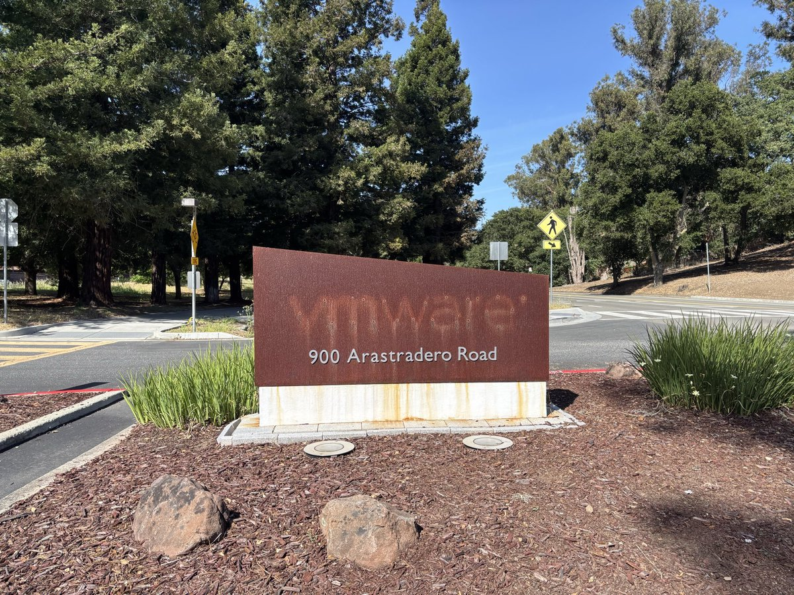

奶昔🥤
@realNyarime
这张图是我在网上找的，具体出处我忘记了，只想表达一句唏嘘
自从博通买了VMware以后，Workstation跟Fusion一样免费了，但也不汉化了。ESXi9没有注册机了，大部分用户停留在ESXi8，还好社区给了螃蟹卡驱动。
VDDK开发包撤了，对于一个虚拟机大哥来说，不是PVE击败了它，而是它的主人亲手把它的生态炸了

蓝点网
@landiantech
#VMware 生态系统变得更加封闭，博通撤下 #VDDK 开发工具包下载，企业想要从 VMware 迁移到其他平台变得更困难。
VDDK 是很多备份迁移工具依赖的工具包，如果没有这个工具包那迁移工具就无法工作。微软和红帽都已经确认博通撤下 VDDK，由于该工具本身就是博通专有软件，所以红帽也无法提供 VDDK https://t.co/qbxbXXwQiq